CS184/284A Spring 2026 Homework 3 Write-Up
Link to webpage: https://cal-cs184-student.github.io/hw-webpages-shen147258369/hw3/index.html
Link to GitHub repository: https://github.com/cal-cs184-student/hw3-pathtracer-oinkoink

Overview
In this homework we implement a path tracer: the rendering pipeline starts with camera ray generation and scene intersection (Part 1), then acceleration via BVH (Part 2), and physically based direct and indirect lighting (Parts 3–4), with adaptive sampling (Part 5). So far, Part 1 is complete: we generate rays from normalized image coordinates through the sensor plane, sample pixels with a grid sampler, and intersect rays with triangles (Möller–Trumbore) and spheres (quadratic solution). The pipeline correctly produces normal-shaded images for small .dae scenes. A useful takeaway was matching the image coordinate convention (e.g. bottom-left origin) to the camera sensor so that ray directions vary correctly across the image.
Part 1: Ray Generation and Scene Intersection
Ray Generation and Primitive Intersection Pipeline
Ray generation: For each pixel we get normalized image coordinates \((x,y) \in [0,1]^2\) with \((0,0)\) at the bottom-left and \((1,1)\) at the top-right. We map these to a point on the camera sensor in camera space (on the \(Z = -1\) plane): \(x_c = (2x - 1)\tan(\text{hFov}/2)\), \(y_c = (2y - 1)\tan(\text{vFov}/2)\). The ray in camera space starts at the origin and passes through \((x_c, y_c, -1)\); we normalize this direction and transform it to world space using the camera-to-world matrix, then set the ray’s \(t\) range to the near and far clip planes.
Pixel sampling: In raytrace_pixel, we take ns_aa samples per pixel. For each sample we draw a random offset in \([0,1)^2\) with the grid sampler, compute normalized coordinates \((x + s_x)/w\), \((y + s_y)/h\), generate a camera ray, and call est_radiance_global_illumination. The pixel color is the average of these radiance values.
Primitive intersection: The BVH (or scene) tests the ray against primitives. For triangles we use Möller–Trumbore (see below). For spheres we solve the quadratic \(|O + tD - C|^2 = r^2\) for the ray \(O + tD\) and sphere center \(C\), radius \(r\), then take the smallest \(t\) in \([\text{min}_t, \text{max}_t]\) and set the hit normal to the normalized vector from the sphere center to the hit point. In both cases we only accept \(t \in [\text{min}_t, \text{max}_t]\) and update \(\text{max}_t\) to the closest hit so we keep the nearest intersection.
Triangle Intersection Algorithm (Möller–Trumbore)
I implemented the Möller–Trumbore ray-triangle test. The ray is \(\mathbf{O} + t\mathbf{D}\); the triangle has vertices \(\mathbf{p}_1, \mathbf{p}_2, \mathbf{p}_3\). Let \(\mathbf{e}_1 = \mathbf{p}_2 - \mathbf{p}_1\), \(\mathbf{e}_2 = \mathbf{p}_3 - \mathbf{p}_1\). We form \(\mathbf{P} = \mathbf{D} \times \mathbf{e}_2\) and \(\det = \mathbf{e}_1 \cdot \mathbf{P}\). If \(|\det|\) is near zero, the ray is parallel to the triangle and we return no hit. Otherwise we compute \(\mathbf{T} = \mathbf{O} - \mathbf{p}_1\), then barycentrics \(u = (\mathbf{T} \cdot \mathbf{P})/\det\) and \(v = (\mathbf{D} \cdot \mathbf{Q})/\det\) with \(\mathbf{Q} = \mathbf{T} \times \mathbf{e}_1\), and \(t = (\mathbf{e}_2 \cdot \mathbf{Q})/\det\). We accept only if \(u \geq 0\), \(v \geq 0\), \(u+v \leq 1\), and \(t\) lies in the ray’s \([\text{min}_t, \text{max}_t]\), then update \(\text{max}_t\) and fill the intersection (including normal by interpolating vertex normals with \(1-u-v\), \(u\), \(v\)).
Normal Shading Images (Small .dae Scenes)
Screenshots were generated with the -f flag (or 'S' hotkey), using -r 480 360 as recommended. Below: normal shading for CBempty.dae and CBspheres_lambertian.dae.
|
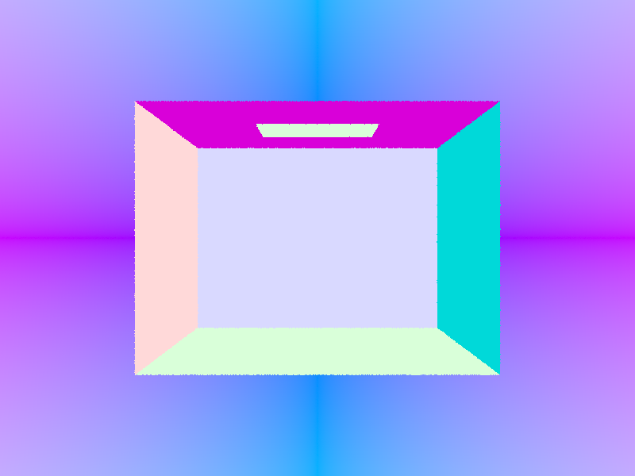 |
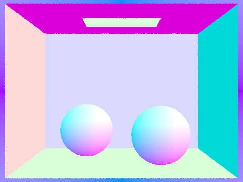 |
Part 2: Bounding Volume Hierarchy
BVH Construction Algorithm
The BVH is built recursively in construct_bvh(start, end, max_leaf_size). For the current range of primitives [start, end), we first compute the aggregate bounding box by expanding over each primitive’s get_bbox(). We create a new BVHNode with this box. If the number of primitives is ≤ max_leaf_size, we store start and end in the node and return it as a leaf. Otherwise we split: we choose the axis with the largest extent (x, y, or z), use the centroid of the node’s bounding box along that axis as the split value, and partition the primitives with std::partition so that primitives whose bbox centroid is less than the split go to the left. If the partition puts all primitives on one side (mid == start or mid == end), we force mid = start + n/2 to avoid infinite recursion. We then recursively build the left child from [start, mid) and the right child from [mid, end), and assign them to node->l and node->r.
Splitting Heuristic
Axis: We split along the axis with the maximum extent of the node’s bounding box. This tends to separate the primitives into two spatially balanced groups and keeps the tree shallow.
Split point: We use the centroid of the node’s bounding box along that axis (i.e. the midpoint of the spatial range). An alternative would be the average of primitives’ centroid coordinates along the axis; the bbox centroid is simple and avoids scanning primitives twice. Together, “longest axis + midpoint” gives a fast, stable split.
Ray–BVH Intersection
Ray–box intersection uses the slab method: for each axis we compute entry/exit \(t\) with the two planes, swap if the ray direction component is negative, then take \(t_0 = \max(\text{enter})\) and \(t_1 = \min(\text{exit})\); we only recurse if the box is hit and \([t_0, t_1]\) overlaps the ray’s \([min_t, max_t]\). For has_intersection we return true on the first hit; for intersect we recurse into both children when the ray hits the node’s box, and primitives’ own intersect update ray.max_t and the intersection record so the closest hit is kept.
Normal Shading — Large .dae Scenes (BVH Only)
Screenshots generated with the -f flag (or 'S' hotkey), -r 800 600 -t 8. These scenes are only practical to render with BVH acceleration.
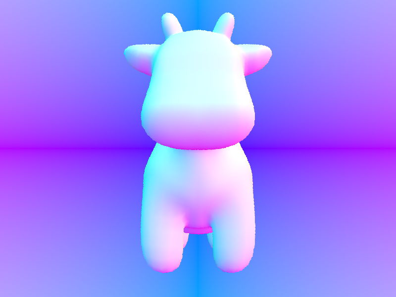 |
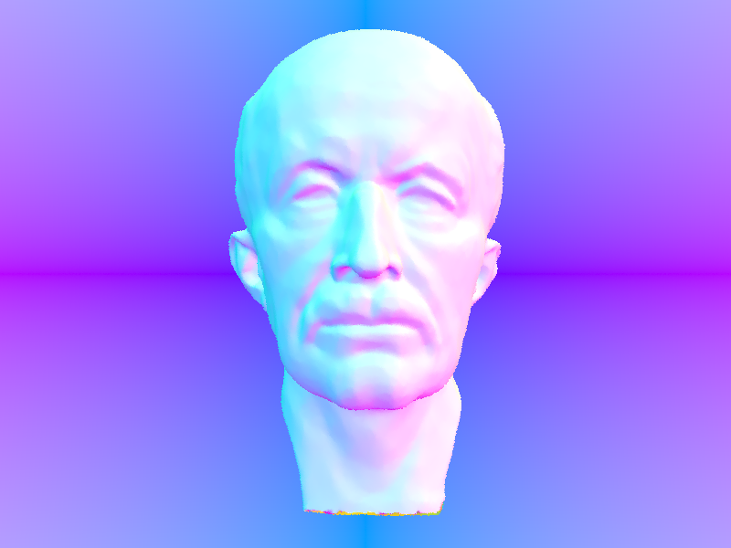 |
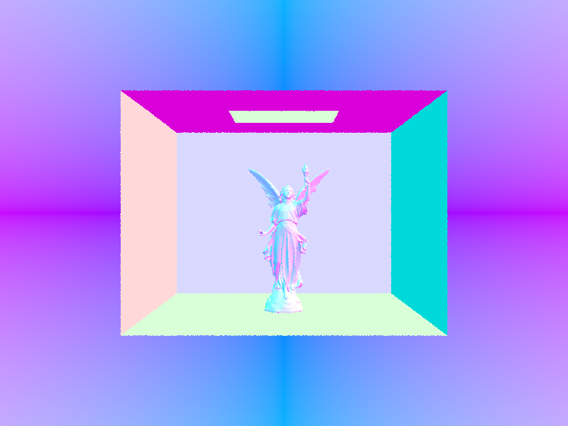 |
Rendering Time: With vs Without BVH
Without BVH acceleration (single leaf containing all primitives), the path tracer tests every ray against every primitive, so cost is \(O(n)\) per ray and rendering becomes impractical for large meshes (e.g. the reference reports ~40 s for cow.dae). With the BVH, each ray traverses a logarithmic number of nodes and only tests primitives in leaves whose boxes are hit, reducing complexity to roughly \(O(\log n)\) per ray. On several scenes with moderately complex geometry (e.g. cow, maxplanck, CBlucy), we observed a large speedup: cow drops from tens of seconds to well under a second, and even CBlucy (hundreds of thousands of triangles) renders in a few seconds with BVH. The exact ratio depends on the machine and resolution; the important point is that BVH makes large scenes tractable and is essential for the rest of the assignment.
Part 3: Direct Illumination
Walk Through: Both Direct Lighting Implementations
Uniform hemisphere sampling (estimate_direct_lighting_hemisphere): We build a local frame at the hit point with the normal as \(z\) (o2w, w2o). We take num_samples = lights.size() * ns_area_light uniform hemisphere samples in object space via hemisphereSampler->get_sample(), convert each to world space, and cast a ray from the hit point in that direction with min_t = EPS_F. If the ray hits a surface with non-zero emission, we add the one-bounce contribution \(\displaystyle \frac{f(\omega_o,\omega_i)\,L_i\,\cos\theta_i}{p(\omega_i)}\) with \(p(\omega_i) = 1/(2\pi)\). We average over all samples. This works for area lights but rarely hits point lights and is noisy.
Light importance sampling (estimate_direct_lighting_importance): For each light we sample only directions toward that light: delta lights once, area lights ns_area_light times via light->sample_L(hit_p, &wi_world, &distToLight, &pdf). We skip if the light is behind the surface (dot(n, wi_world) ≤ 0). We cast a shadow ray from the hit point toward the light with max_t = distToLight - EPS_F; if it hits anything, the light is blocked. Otherwise we add \(f(\omega_o,\omega_i)\,L\,\cos\theta_i\,/\,\mathit{pdf}\) (with wi_obj = w2o * wi_world) and average over the samples per light. This reduces variance and supports point lights.
Images: Both Implementations
All images generated with the -f flag, -r 480 360 -t 8. Left: uniform hemisphere sampling (-H). Right: light importance sampling (no -H).
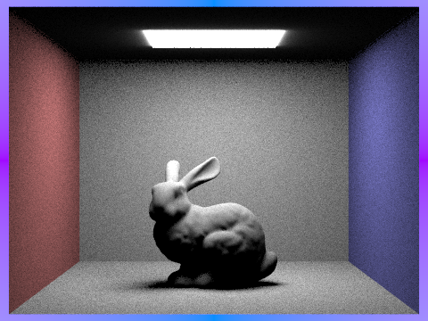 -s 64 -l 32 -m 6 -H). |
-s 1 -l 1 -m 1). |
Noise in Soft Shadows: 1 vs 4 vs 16 vs 64 Light Rays
Scene: CBbunny.dae (area light). Fixed at 1 sample per pixel (-s 1), light sampling only (no -H). Below: -l 1, -l 4, -l 16, -l 64. As the number of light rays increases, soft shadows become smoother and noise decreases.
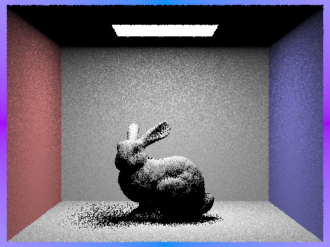 -l 1 |
-l 4 |
-l 16 |
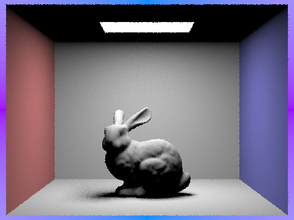 -l 64 |
To generate these: pathtracer.exe -t 8 -s 1 -l <1|4|16|64> -m 1 -f CBbunny_s1_l<N>.png -r 480 360 <path>\dae\sky\CBbunny.dae, then place the PNGs in img/.
Hemisphere vs Light Sampling — Short Comparison
With uniform hemisphere sampling, we estimate direct lighting by sampling directions uniformly over the hemisphere; only when a sample hits a light do we get contribution. That makes the estimate high-variance and noisy, especially with small or point lights, and point lights are effectively never hit. With light importance sampling we sample directions only toward the lights (using each light’s sample_L and its pdf), so every sample carries information and variance drops. Soft shadows and area light shading become much cleaner for the same sample count, and point and spot lights are supported. The trade-off is a bit more code per light type and correct handling of shadow rays and pdfs; for this assignment, importance sampling is the preferred method for direct lighting.
Part 4: Global Illumination
Walk Through: Indirect Lighting Function
The indirect lighting is implemented in at_least_one_bounce_radiance. At each hit we build a local frame (normal as \(z\)) and compute hit_p, w_out = w2o * (-r.d). If isAccumBounces is true we add one_bounce_radiance (direct light at this vertex). If isAccumBounces is false and r.depth == 1, we return only one_bounce_radiance (the last bounce is direct). When r.depth ≤ 1 we stop. Otherwise we apply Russian Roulette: with probability 0.35 we terminate; else we sample an incident direction wi_obj and pdf via isect.bsdf->sample_f(w_out, &wi_obj, &pdf), cast a ray from hit_p with depth = r.depth - 1 and min_t = EPS_F. If it hits, we set L_in = zero_bounce_radiance(...) + at_least_one_bounce_radiance(...) at the next hit and add \(f \cdot L_{\text{in}} \cdot \cos\theta_i / (\mathit{pdf} \cdot (1 - p_{\text{rr}}))\) to L_out. Camera rays are initialized with r.depth = max_ray_depth in raytrace_pixel; est_radiance_global_illumination returns zero_bounce plus at_least_one_bounce_radiance when max_ray_depth ≥ 1.
Images: Global (Direct + Indirect) Illumination, 1024 spp
All renders below use 1024 samples per pixel, -r 480 360 -t 8 -l 16 -m 5, output with -f.
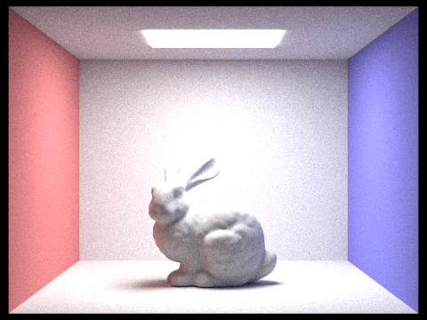 |
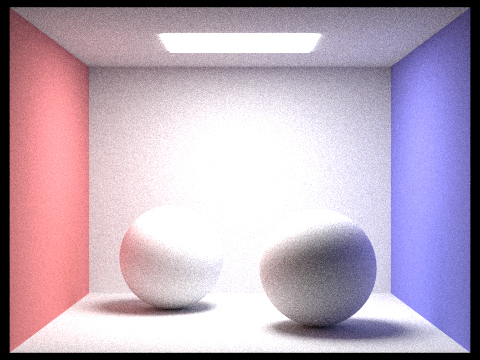 |
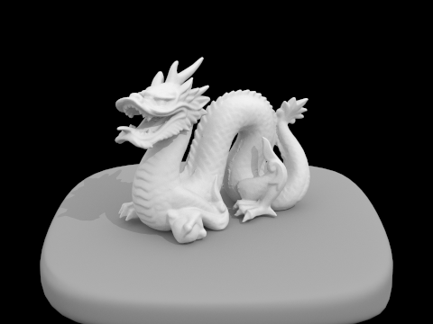 |
Direct Only vs Indirect Only (CBbunny.dae, 1024 spp)
To generate these we set kDirectOnly or kIndirectOnly in pathtracer.cpp. Left: only direct illumination (zero-bounce emission + one-bounce from lights). Right: only indirect (paths with at least one bounce; no direct contribution at the first hit). Indirect shows color bleeding from the red/blue walls onto the bunny and floor; direct has sharp shadows and no bleeding.
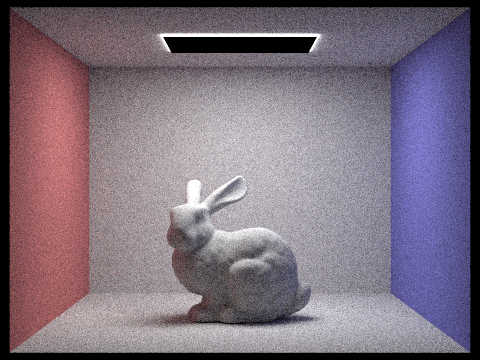 |
m-th Bounce of Light (isAccumBounces = false), m = 0, 1, 2, 3, 4, 5 — 1024 spp
With isAccumBounces = false, we render only the light at exactly the m-th bounce. m=0 is emission only; m=1 is direct lighting; m=2 and m=3 are the first and second indirect bounces. The 2nd bounce shows light that has hit one surface then a light (or an emissive surface)—e.g. ceiling/wall to floor. The 3rd bounce adds one more surface interaction (e.g. wall → bunny → floor), giving softer color bleeding and fill light in shadows. Together, these bounces add the inter-reflection and color bleeding that rasterization typically does not simulate, improving realism.
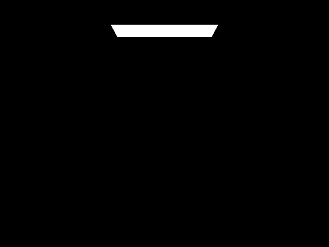 |
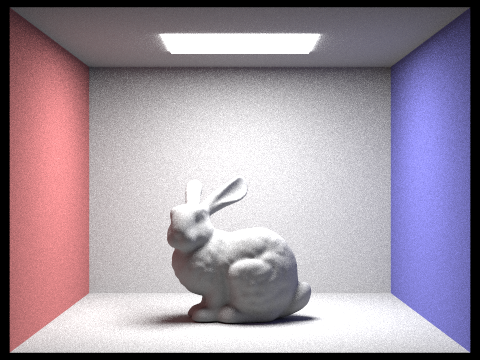 |
|
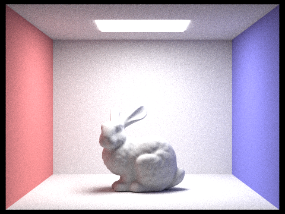 |
Accumulated vs Unaccumulated Bounces (CBbunny.dae, m = 0..5, 1024 spp)
Left column: accumulated (sum of bounces 0 through m). Right column: unaccumulated (only the m-th bounce). As m increases, accumulated converges to full global illumination; unaccumulated shows the contribution of each bounce in isolation.
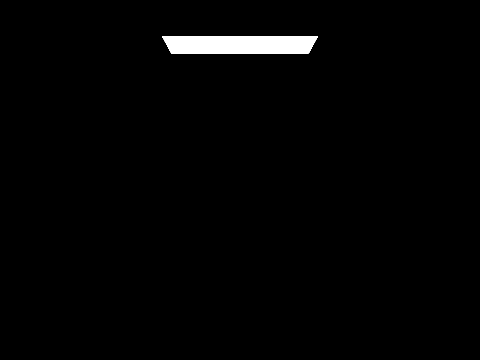 |
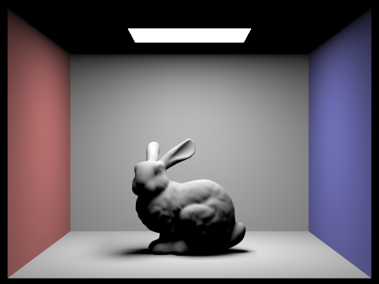 |
||
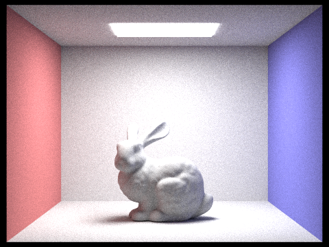 |
Russian Roulette (CBbunny.dae, m = 0, 1, 2, 3, 4, 100 — 1024 spp)
Russian Roulette (termination probability 0.35) is applied when recursing in at_least_one_bounce_radiance. Continuation is weighted by \(1/(1-p)\) to keep the estimate unbiased. m=100 allows long paths; the result should match the full global illumination look.
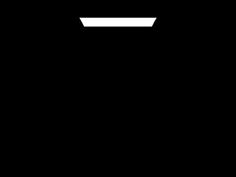 |
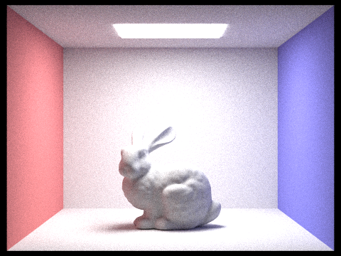 |
Sample-per-Pixel Comparison (CBspheres_lambertian.dae, 4 light rays, 1024 spp reference)
Renders with 1, 2, 4, 8, 16, 64, and 1024 samples per pixel (-l 4 -m 5). Noise decreases as spp increases; 1024 spp gives a relatively clean image for the write-up.
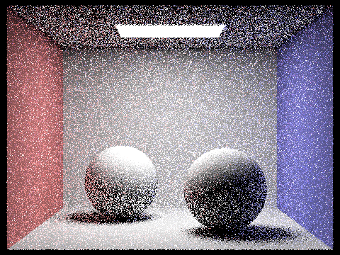 |
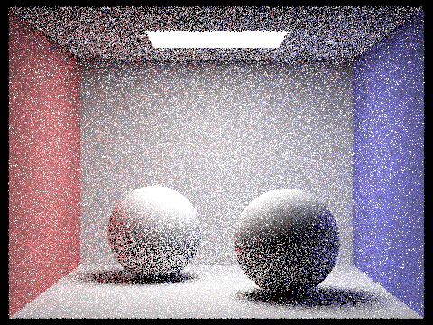 |
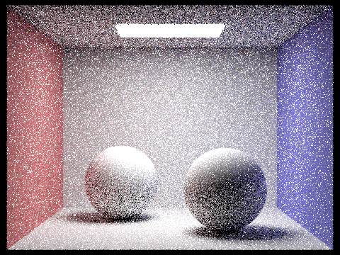 |
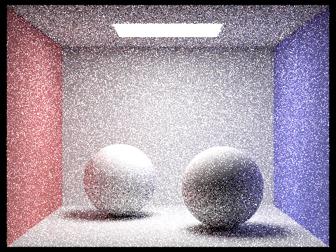 |
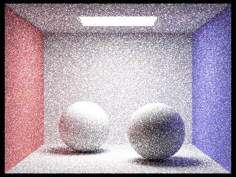 |
Part 5: Adaptive Sampling
What is adaptive sampling?
Instead of shooting the same number of samples for every pixel, adaptive sampling tries to stop early on converged pixels and spend more samples on noisy regions. For each pixel, we maintain a running estimate of the mean radiance and its variance from the samples seen so far. Using these statistics, we build a confidence interval for the pixel’s true value and stop sampling once the interval is sufficiently tight (i.e. the pixel looks “stable”), or when we hit the maximum samples per pixel limit.
Implementation details
In raytrace_pixel, we loop over samples for one pixel, accumulating both the sum of sample values and the sum of squared values per color channel. Every samplesPerBatch (e.g. 32) samples we compute the current mean \(\mu\) and second moment \(E[x^2]\) from these running sums and derive the variance \(\sigma^2 = E[x^2] - \mu^2\). We then estimate a 95% confidence interval width
\[
I = 1.96 \sqrt{\frac{\sigma^2}{n}},
\]
where \(n\) is the number of samples taken so far. Following the spec, we compare max(I_r, I_g, I_b) against maxTolerance * max(mu_r, mu_g, mu_b). If the interval is smaller than this threshold, the pixel is considered converged and we break out of the sampling loop early; otherwise we keep shooting more rays until either it converges or we reach ns_aa samples. The final pixel color is the mean radiance \(\mu\).
Results on two Cornell box scenes (2048 spp max, 1 light sample, max depth ≥ 5)
We applied adaptive sampling to two scenes, CBbunny.dae and CBspheres_lambertian.dae, using up to 2048 samples per pixel, 1 sample per light, and maximum ray depth 5.
For each scene we show both the sample rate visualization (red = many samples, blue = few samples) and the corresponding nearly noise-free final render.
The images were generated via the GUI hotkey S (or the -f flag) and then copied into the img/ folder.
|
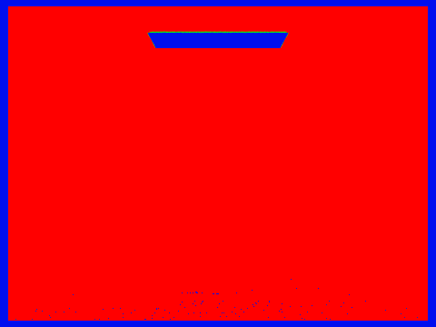 |
|
|
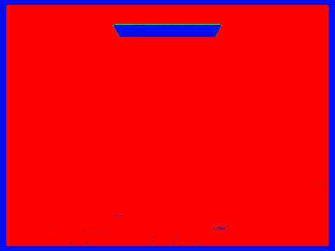 |
|
Part 6: Extra Credit
Surface Area Heuristic (SAH) BVH splitting
For extra credit I replaced the simple “longest axis + midpoint” BVH splitting rule with a surface area heuristic (SAH). At each internal node I first choose the axis with the largest extent of the node’s bounding box, then sort the primitives in-place along that axis by their bbox centroids. I precompute prefix and suffix bounding boxes over this sorted range and evaluate the SAH cost \[ C(\text{split at } i) \propto A_L(i)\,N_L(i) + A_R(i)\,N_R(i) \] for all valid split points, where \(A_L, A_R\) are the surface areas of the left and right child boxes and \(N_L, N_R\) are their primitive counts. I pick the split index with the lowest cost (falling back to a 50–50 split in degenerate cases) and recurse on the two ranges. Compared with the midpoint heuristic, SAH tends to produce more balanced subtrees that better match the actual geometric distribution, especially for highly non-uniform meshes like CBlucy or wall-e.
Iterative BVH traversal (stack-based)
I also rewrote BVHAccel::has_intersection and BVHAccel::intersect to use an explicit std::stack<BVHNode*> instead of recursive calls.
The new routines push the root onto the stack and loop while the stack is non-empty: each iteration pops a node, tests its bbox against the ray, and either iterates over its leaf primitives or pushes its children.
This removes function-call overhead from deep recursion, avoids possible stack overflows on very unbalanced trees, and makes it easier to extend the traversal (for example, reordering children by bbox hit distance for better early-out behavior).
Performance measurements
To evaluate these changes I rendered several large scenes with low sample counts (so that BVH build and traversal dominate time) using -t 8 -s 1 -l 1 -m 1 -r 800 600.
Below are the timings reported by the path tracer for the SAH + iterative BVH implementation:
| Scene | # Primitives | BVH build time | Render time | Rays / second | Avg. intersections / ray |
|---|---|---|---|---|---|
| CBlucy.dae | 133,796 | 0.918 s | 0.109 s | 5.76 M | 2.48 |
| dragon.dae | 105,120 | 0.803 s | 0.144 s | 4.24 M | 2.93 |
| wall-e.dae | 240,326 | 2.322 s | 0.115 s | 4.45 M | 3.48 |
Qualitatively, SAH produces noticeably better trees than the midpoint heuristic on complex, highly clustered meshes: build time increases slightly because we sort centroids and evaluate many candidate splits, but the average number of intersection tests per ray stays low (around 2–3) even for hundreds of thousands of primitives, and the overall rays/second throughput remains high. The stack-based traversal matches or slightly improves render times compared to the recursive version while giving more predictable behavior for very deep BVHs.
Example renders for SAH + iterative BVH
Because I used only 1 sample per pixel and per light for timing, the images below are intentionally very noisy—they are meant to stress-test BVH construction and traversal rather than produce final-quality renders.
All three were generated with the SAH + iterative BVH implementation using the following commands:
CBLucy .\pathtracer.exe -t 8 -s 1 -l 1 -m 1 -r 800 600 -f CBlucy_sah.png ^ D:\course-ucb\cs184\hw3-pathtracer-oinkoink\dae\sky\CBlucy.dae dragon .\pathtracer.exe -t 8 -s 1 -l 1 -m 1 -r 800 600 -f dragon_sah.png ^ D:\course-ucb\cs184\hw3-pathtracer-oinkoink\dae\sky\dragon.dae wall-e .\pathtracer.exe -t 8 -s 1 -l 1 -m 1 -r 800 600 -f walle_sah.png ^ D:\course-ucb\cs184\hw3-pathtracer-oinkoink\dae\sky\wall-e.dae
|
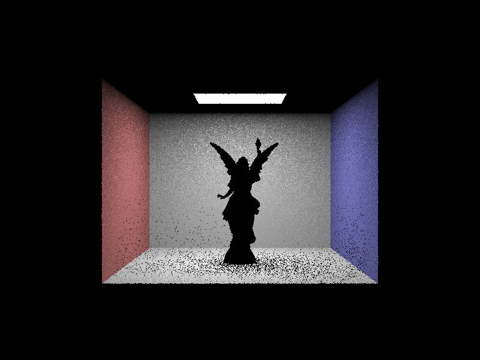 |
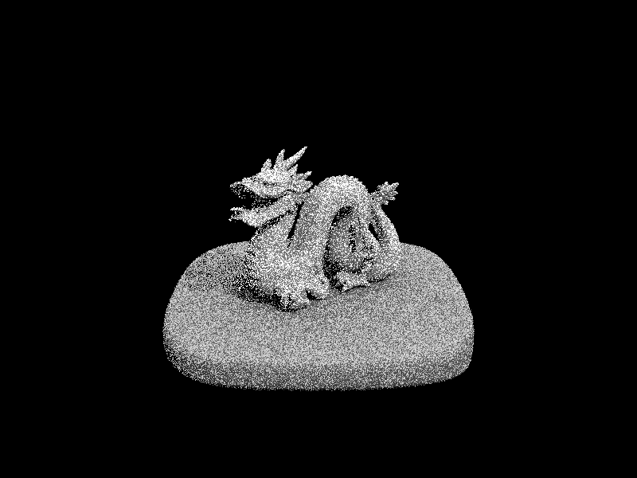 |
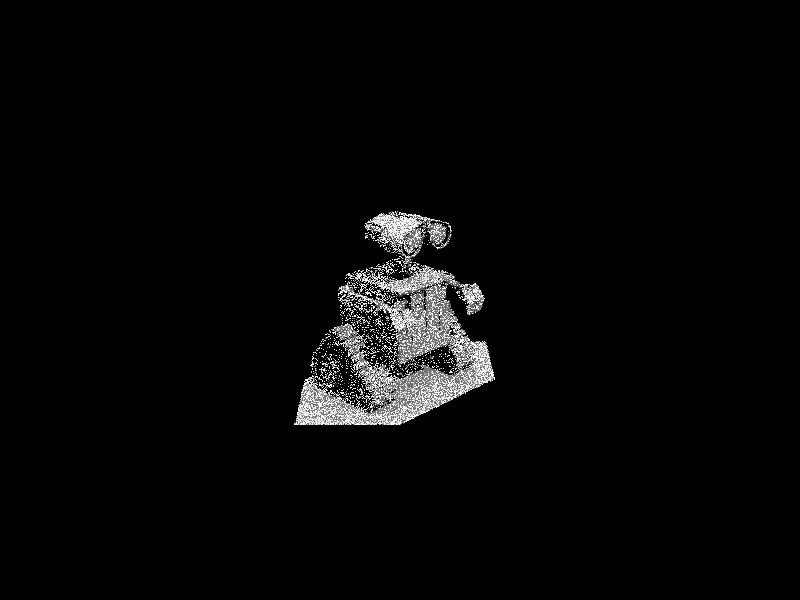 |